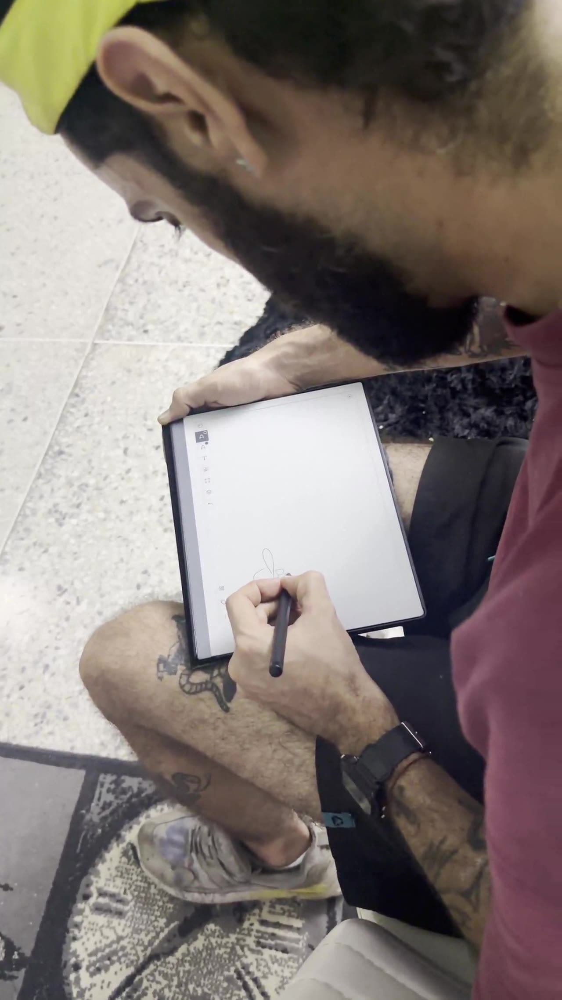
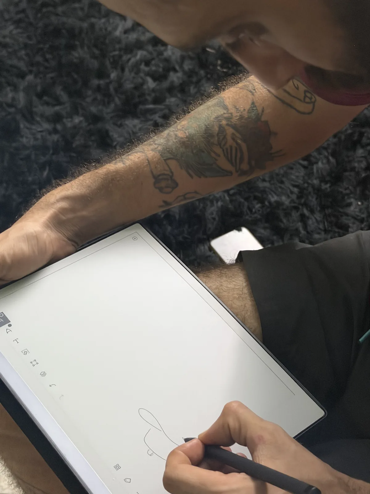
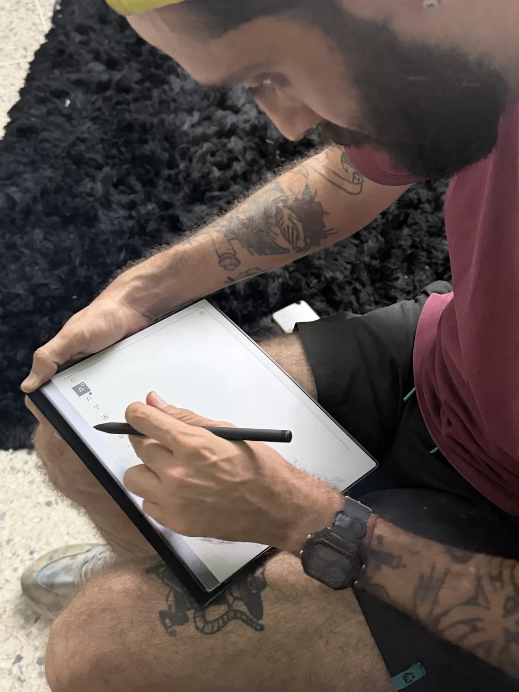
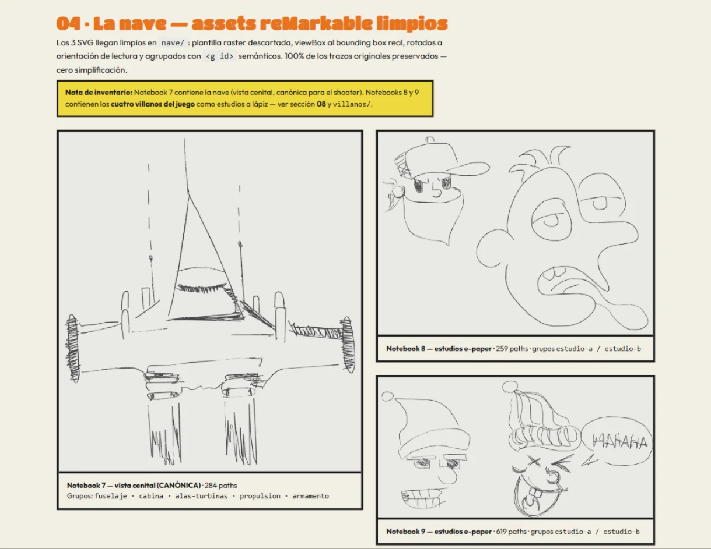
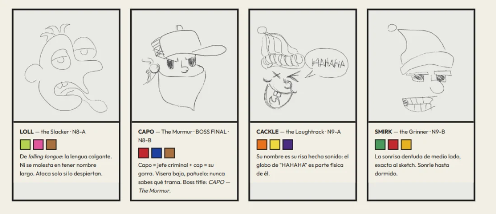
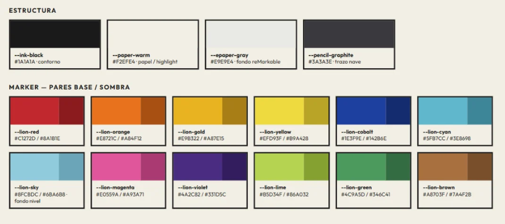
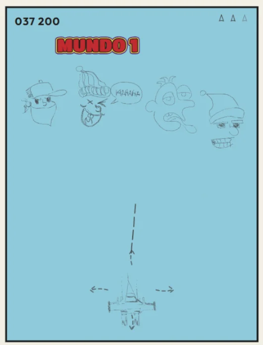

De la libreta
al juego × Lion Mix
Todo «Vienen por mí» nació dentro de una libreta e-paper: la nave, los cuatro villanos y el mundo entero, dibujados a lápiz antes de escribir una sola línea de código. Este es el registro de cómo esos trazos llegaron a la pantalla — sin perder ni uno.

Sesión de dibujo real sobre e-paper — el origen de todo el arte del juego
La libreta
lápiz · e-paperSin tableta gráfica, sin software de ilustración. El punto de partida fue el mismo de siempre: dibujar. Tres notebooks de una libreta e-paper guardan el ADN completo del juego — el Notebook 7 con la nave en vista cenital, y los Notebooks 8 y 9 con los estudios de personajes.


Los trazos se vuelven vectores
SVG · 0% simplificaciónLa regla del proyecto fue una sola: 100% de los trazos originales preservados, cero simplificación. Cada boceto se exportó y se convirtió en SVG limpio — plantilla raster descartada, viewBox ajustado al bounding box real, rotado a orientación de lectura y agrupado con <g id> semánticos: fuselaje, cabina, alas-turbinas, propulsion, armamento.

El casting de villanos
4 enemigos · 1 bossLos cuatro salieron tal cual de la libreta: nadie fue redibujado «en limpio». Sus nombres nacieron de lo que ya eran en el papel.
LOLL
the Slacker · N8-ADe lolling tongue: la lengua colgante. Ni se molesta en tener nombre largo. Ataca solo si lo despiertan.
CAPO
The Murmur · BOSS FINAL · N8-BCapo = jefe criminal + cap = su gorra. Visera baja, pañuelo: nunca sabes qué trama.
CACKLE
the Laughtrack · N9-ASu nombre es su risa hecha sonido: el globo de «HAHAHA» es parte física de él.
SMIRK
the Grinner · N9-BLa sonrisa dentuda de medio lado, exacta al sketch. Sonríe hasta dormido.

El color: paleta Lion
12 markers · base + sombraEl lápiz puso la forma; los marcadores pusieron la sangre. La paleta Lion son 12 pares base/sombra construidos sobre la estructura del papel: --ink-black para el contorno, --paper-warm como highlight y --pencil-graphite para el trazo de la nave. Cada villano toma exactamente tres marcadores — ni uno más.

Mundo 1: todo junto
shooter verticalEl primer mockup jugable: la nave del Notebook 7 abajo (vista cenital, canónica para el shooter), los cuatro villanos en formación arriba, y el marcador corriendo. Los trazos de la libreta, ahora con física, disparos y un mundo azul cielo esperando ser invadido.

¿Listo para que vengan por ti?
Cada enemigo que esquives fue primero un trazo de lápiz. Cada nivel, una página de la libreta.
Jugar «Vienen por mí»